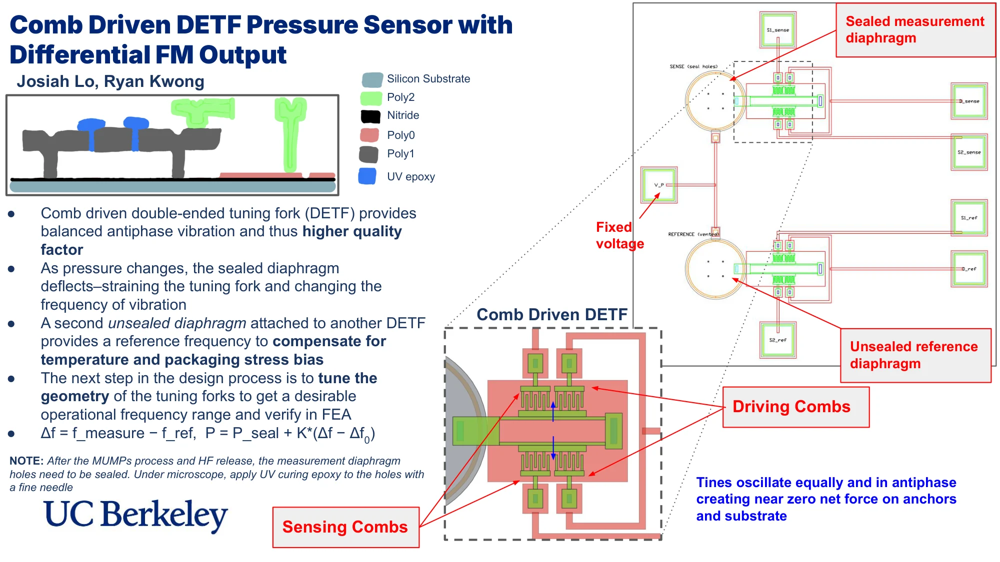
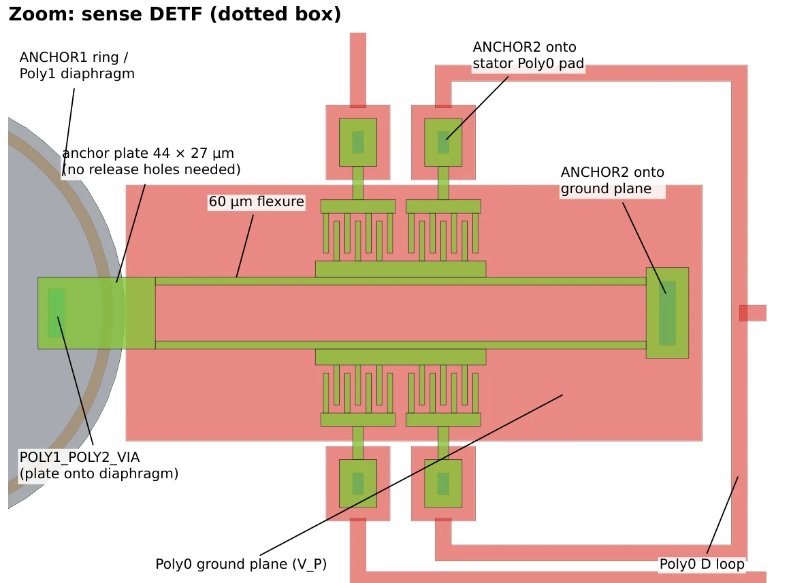
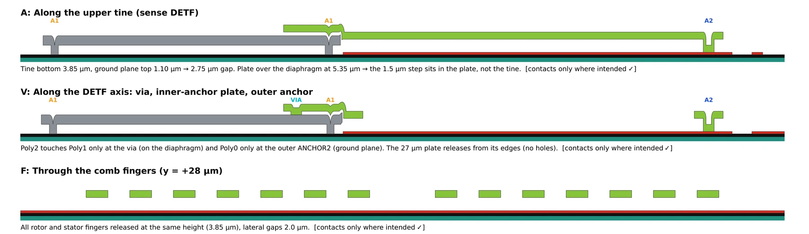
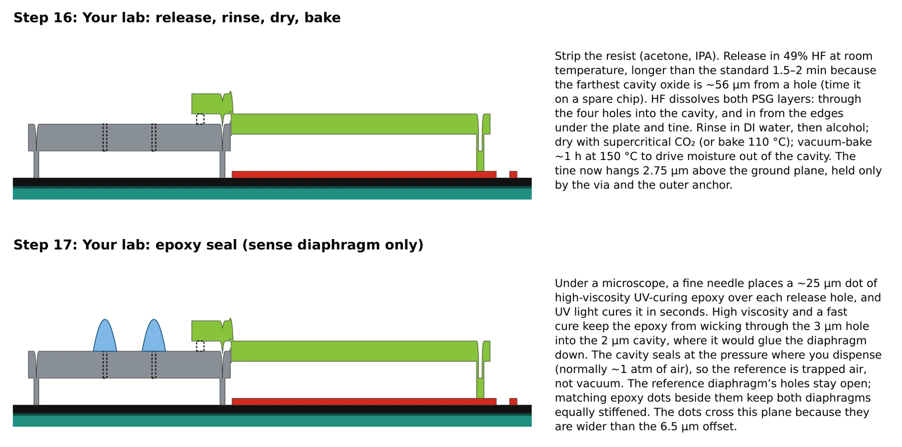

How it works
The die holds two matching halves. In each one, a polysilicon diaphragm connects to a comb-driven double-ended tuning fork (DETF). Its two tines vibrate equally and in antiphase, so the net force on the anchors and substrate is nearly zero, which gives the resonator a high quality factor.
The measurement diaphragm’s cavity is sealed after release. As outside pressure changes, it deflects, straining its tuning fork and shifting the fork’s frequency. The reference diaphragm is left unsealed, so its fork provides a reference frequency that sees the same temperature and packaging stress. The pressure comes from the difference between the two frequencies:
Δf = fmeasure − fref, P = Pseal + K(Δf − Δf0)


Sizing the tuning fork
I sized the tuning fork through hand calculations and beam FEA of its stiffness, buckling, air damping, and stress stiffening. Lengthening the flexures from 18 to 60 µm lowered the resonance from 3.2 MHz to 670 kHz and raised pressure sensitivity 4.6×, while holding a 2× buckling margin. The tines grew from 100 to 184 µm, and the shuttle and comb drives stayed the same.


Layout & design rules
I laid out all 8 PolyMUMPs masks for the 1 mm × 1 mm die and exported them as DXF and GDS files. The layout passes the PolyMUMPs minimum-feature, spacing, and level-to-level rules, with no shorts between pads and every structure connected to a pad and anchored.
Meeting the rules took several changes, such as widening the tines from 2 to 3 µm, since the foundry advises against long, isolated 2 µm lines. One deliberate waiver remains: each diaphragm releases through only four center holes, so the farthest oxide sits about 56 µm from a hole and needs a longer HF release.
Process simulation
To confirm the masks build the intended structure, the layout was checked against a 2-D simulation of the PolyMUMPs process along several cuts through the die: conformal LPCVD deposition, anisotropic RIE, and the HF release. Every section shows contacts only where intended, with the tines released 2.75 µm above the ground plane and 2 µm lateral gaps between comb fingers.


After the foundry run and HF release, the plan is to seal the measurement diaphragm’s holes under a microscope with dots of UV-curing epoxy placed by a fine needle. The cavity seals at about 1 atm, so its reference is trapped air. Matching epoxy dots beside the open reference holes keep both diaphragms equally stiff.

